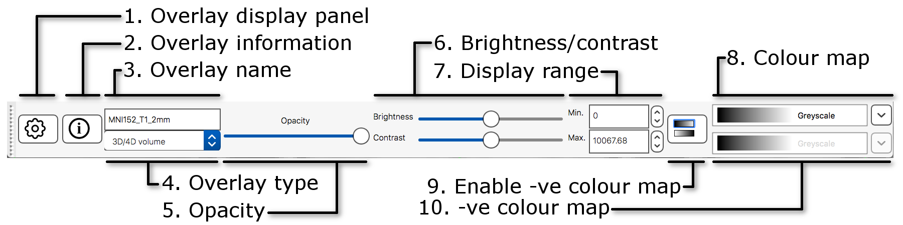

Introduction - FSLeyes
This is the version of the FSL practical adjusted for use in PYM0FM, to be used on the CINN Nutanix Platform. Consequently, there are a few things you need to keep in mind:
- The data is not stored in your home folder (~/fsl_course_data), and instead it is stored in the shared pym0fm drive, located at
/storage/silver/pym0fm/<your DTS login>/fsl_course_data. - We are using virtual machines that are preconfigured for neuroimaging work. Our researchers typically use both FSL verion 5 and 6, and to avoid conflict we are containing version of the software in modules. When you start a new terminal session, whether you start a new analysis, or you just closed one terminal, you will have to type
module load fsl6.0, each time.
FSLeyes (pronounced fossilise) is the new FSL image viewer for 3D and 4D data (replacing FSLView). It does not perform any processing or analysis of images - that is done by separate tools. FSLeyes has lots of features to visualise data and results in a variety of useful ways, and some of these are shown in this introductory practical. You will also be using FSLeyes throughout the course, so it is useful to get a feel for it, but many more useful features will be included in the course.
This practical provides a quick introduction to some FSLeyes features that you will be likely to use quite often. For a full overview of what FSLeyes can do, take a look at the FSLeyes user guide.
Getting started
I have copied part of the FSL example data in the PYM0FM Silver drive, in folders for each of you: the path to the PYM0FM silver drive is /storage/silver/pym0fm. Please open a command terminal and type:
cd /storage/silver/pym0fm/ ls
This lists all the folders in the shared drive for PYM0FM. There should be one for you, with your university login as a name. If there is not, please tell me.
Then type:
cd <type your login here>/fsl_course_data/intro
Start FSLeyes by typing:
fsleyes &
The & means that the program you asked for
(fsleyes) runs in the background in the terminal (or shell), and
you can keep typing and running other commands while fsleyes continues to
run. If you had not made fsleyes run in the background (i.e., if
you had just typed fsleyes without the & at the
end) then you would not be able to get anything to run in that terminal until
you killed fsleyes (although you could still type things, but
they would not run).
Other useful Unix info:
- To kill a job that is running (in the "foreground") in the
terminal just type
control-c - To get a list of jobs running the background, type
jobs - To bring something from running in the background to running in the
foreground, type
fgif it is the last job that was started. - To force a job that is already running (in the foreground) to be in the
background, type
control-zand thenbg. Note thatcontrol-zon its own will give you the terminal prompt back but the job will be sleeping, not running in the background, until you dobg.
Basic image viewing
FSLeyes by defaults opens in the ortho view mode. If you add
image filenames on the command line (after typing fsleyes) it
will load them all automatically, and you can also add many options from the
command line. FSLeyes assumes that all of the images which you load share a
single coordinate system, but images do not have to have the same field of
view, number of voxels, or timepoints.
fsleyes -h to get an overview on how to use
FSLeyes from the command line.
In FSLeyes, load in the image example_func.nii.gz, by pressing
File > Add from file and selecting the image.
You might need to navigate to the folder fsl_course_data/intro, depending where you were in the filesystem tree of folders when you launched fsleyes.
Once you selected and opened example_func.nii.gz, hold the mouse button down in one of the ortho canvases and move it around
- see how various things update as you do so:
- the other canvases update their view
- the cursor's position in both voxel and mm co-ordinates gets updated
- the image intensity at the cursor is shown
Navigating in an ortho view
You can interact with an orthographic view in a number of ways. Spend a couple of minutes trying each of these.
- Click, or click and drag on a canvas, to change the current location.
- Right click and drag on a canvas to draw a zoom rectangle. When you release the mouse, the canvas will zoom in to that rectangle.
- Hold down the ⌘ key (OSX) or CTRL key (Linux), and use your mouse wheel to zoom in and out of a canvas.
- Hold down the ⇧ key, and use your mouse wheel to change the current location along the depth axis (change the displayed slice) for that canvas.
- You can middle-click and drag, or hold down the ALT key and drag with the left mouse button, to pan around.
The display toolbar
The display toolbar allows you to adjust the display properties of the currently selected image. Play around with the controls and note how the image display changes (but leave the "overlay type" as "3D/4D volume").
- Overlay display panel: Clicking on the gear button
(
 ) opens a panel with more display
settings.
) opens a panel with more display
settings. - Overlay information: Clicking on the information button
(
 ) opens a panel with
information about the image.
) opens a panel with
information about the image. - Overlay name: You can change the image name here.
- Overlay type: FSLeyes allows some images to be displayed in different ways. This should be set to "3D/4D volume" most of the time.
- Opacity: Adjust the opacity (transparency) here.
- Brightness/contrast: Quickly adjust the image brightness and contrast here.
- Display range: Use these fields for fine-grained control over how the image data is coloured, instead of using the brightness and contrast sliders.
- Colour map: Choose from several different colour maps.
- Enable -ve colour mapIf you are viewing an image that has both positive and negative values, this button allows you to enable a colour map that is used for the negative values.
- -ve colour map:Choose a colour map for negative values here.
If FSLeyes does not have enough room to display a toolbar in full, it will
display left and right arrows ( ,
,
 ) on each side of the toolbar - you
can click on these arrows to navigate back and forth through the toolbar.
) on each side of the toolbar - you
can click on these arrows to navigate back and forth through the toolbar.
The ortho toolbar

The ortho toolbar allows you to adjust and control the ortho view. Play with the controls, and try to figure out what each of them do.
- View settings panel: Clicking on the spanner button () opens panel with advanced ortho view settings.
- Screenshot: Clicking on the camera button
(
 ) will allow you to save the
current scene, in this ortho view, to an image file.
) will allow you to save the
current scene, in this ortho view, to an image file. - Toggle canvases: These three buttons
(,
 ,
,  ) allow you to
toggle each of the three canvases on the ortho view.
) allow you to
toggle each of the three canvases on the ortho view. - Canvas layout: These three buttons
(
 ,
,
 , ) allow you to choose between laying out the canvases
horizontally, vertically, or in a grid.
, ) allow you to choose between laying out the canvases
horizontally, vertically, or in a grid. - Movie mode: This button (
 ) enables movie mode - if you load a 4D image, and
turn on movie mode, the image will be "played" as a movie (the
view will loop through each of the 3D images in the 4D volume).
) enables movie mode - if you load a 4D image, and
turn on movie mode, the image will be "played" as a movie (the
view will loop through each of the 3D images in the 4D volume). - Toggle cursor/labels: This button (
 ) allows you to toggle the anatomical labels and location
cursor on and off.
) allows you to toggle the anatomical labels and location
cursor on and off. - Reset zoom: This button () resets the zoom level to 100% on all three canvases.
- Zoom slider: Change the zoom level on all three canvases with this slider.
Multiple views: lightbox
Open a lightbox view using View > Lightbox View. If you drag the mouse around in the viewer you can see that the cursor position is linked in the two views of the data (the ortho and the lightbox views). This is particularly useful when you have several images loaded in at the same time (you can view each in a separate view window and move around all of them simultaneously).

The lightbox view has a slightly different toolbar to the ortho toolbar.
- View settings panel: Clicking on the spanner button opens a panel with advanced lightbox view settings.
- Screenshot: Clicking on the camera button will allow you to save the current scene, in this lightbox view, to an image file.
- Z axis: These three buttons allow you to choose which slice plane to display in the lightbox view.
- Movie mode: This button enables movie mode.
- Slice range: These sliders allow you to control the beginning and end points of the slices that are displayed.
- Zoom: This button allows you to control how many slices are displayed on the lightbox view.
- Slice spacing: This slider allows you to control the spacing between consecutive slices.
Unlinking cursors
You can "unlink" the cursor position between the two views (it is linked by default). Go into one of the views, e.g., the lightbox view, and press the spanner button (). This will open the lightbox view settings panel. Turn off the Link Location option, and close the view settings panel.. You will now find that this view (the lightbox view) is no longer linked to the "global" cursor position, and you can move the cursor independently (in this view) from where it is in the other views.
Close the lightbox view for now (click on the small red circle or X at the very top of the view).
Viewing multiple images
Now load in a second image (thresh_zstat1) using
File > Add overlay from file. This image
(thresh_zstat1) is a thresholded FMRI activation image. In the
bottom-left panel is a list of loaded images - the overlay list.
The overlay list shows the images which are currently loaded into FSLeyes. When you select an image in this list, it becomes the currently selected image - in FSLeyes, you can only select one image at a time.
You can use the controls on the display toolbar to adjust the display
properties of the currently selected image.Select the image you just loaded
(thresh_zstat1), and use the display toolbar to change its colour
map to Red-yellow.
The overlay list allows you to do the following:
- Change the currently selected overlay, by clicking on the overlay name.
- Identify the currently selected overlay (highlighted in blue).
- Add/remove overlays with the + and - buttons.
- Change the overlay display order with the ▲ and ▼ buttons.
- Show/hide each overlay with the eye button (
 ), or by double clicking on the overlay name.
), or by double clicking on the overlay name. - Link overlay display properties with the chainlink button
(
 ).
). - Save an overlay if it has been edited, with the floppy disk button
(
 ).
). - Left-click and hold the mouse button down on the overlay name to view the overlay source (e.g. its location in the file system).
Image information
In the bottom right corner of the FSLeyes window you will find the location panel, which contains information about the current cursor location, and image data values at that location.
The controls on the left show the cursor location in "world" coordinates (millimetres). This coordinate system will change depending upon whether your image is in native subject coordinates, standard template coordinates (e.g. MNI152), or some other coordinate space.
The controls in the middle show the cursor location in voxel coordinates, relative to the currently selected image. If the currently selected image is 4D (e.g. a time series image), the bottom control displays the currently selected volume (e.g. time point).
The area on the right displays the intensity value and voxel location at the current cursor location for all loaded images. Note that if you have images with different resolutions loaded, the voxel location will be different for each of them.
Viewing time series (4D images)
Now remove all of the images you have loaded (you can
remove all images via the Overlay > Remove all menu
option), and load in filtered_func_data, a 4D FMRI time
series. Watch this as a movie by pressing the movie button
( ) on the ortho toolbar. The data
changes very subtly over time, so you may wish to adjust the brightness and
contrast in order to see the data changing. Note that, when movie mode is
running, the volume index in the location panel scrolls through the different
time-point values. Note also that whilst the movie is running you can still
change the cursor position. Stop the movie by pressing the movie button
again.
) on the ortho toolbar. The data
changes very subtly over time, so you may wish to adjust the brightness and
contrast in order to see the data changing. Note that, when movie mode is
running, the volume index in the location panel scrolls through the different
time-point values. Note also that whilst the movie is running you can still
change the cursor position. Stop the movie by pressing the movie button
again.
Re-load the thresh_zstat1 stats overlay image back in. Make
sure the filtered_func_data image is selected in the overlay
list, and open a time series plot view via View > Time
series. Note that the FMRI time series data for the current voxel
in filtered_func_data is plotted in the time series view.
The time series toolbar allows you to control a few aspects of how time series are plotted.
- Plot control panel: This button opens the plot control panel, which contains all available plot settings.
- Plot list: This button opens the plot list, which allows you to add and remove time series, and to customise the ones which are currently being plotted.
- Screenshot: This button allows you to save the current plot as a screenshot.
- Import data series: This button opens a file selection dialog, with which you can choose a file to import time series from.
- Export data series: This button allows you to export the time series which are currently plotted to a text file.
- Add data series: This button "holds" the plotted time series for the currently selected image, at the current voxel.
- Remove data series: This button removes the most recently "held" time series from the plot.
- Plotting mode: This option allows you to choose from a few different scaling options to apply to the time series (e.g. demeaning, normalisation).
thresh_zstat1 image until you find a
"highly activated" voxel. Press the add button
(If you have added several time series to the display, they may all have quite different mean values, making comparison difficult - change the Plotting mode drop down menu to Demeaned to demean all displayed time series. You can also also choose to scale the time series to Percent changed. (i.e. in this case you're now seeing the BOLD % signal change values).
When you are finished exploring the time series, close the time series view.
Viewing image histograms
Image histograms give you an overview of all of the intensities within an image. A histogram plots the distribution of intensities in the image; image intensity is on the x axis and the number of voxels with that intensity is on the y axis. Histograms are used as part of structural segmentation methods and can be useful for QC purposes.
Close all overlays (Overlay > Remove all). Open
structural and select View > Histogram to view a
basic histogram.
The histogram toolbar is very similar to the time series toolbar, with a few extra options:
- Histogram type: This setting allows you to control the y axis scale - choosing Count will plot the raw histogram bin counts, and choosing Probability will scale the histogram bin counts by the total number of data points used in the histogram calculation.
- Histogram overlay: This button () allows you to toggle an image on and off which displays all of the voxels that have been included in the histogram plot.
When you are ready, close the histogram view and continue to the next section.
Viewing FMRI analysis results
Finally, we'll look at some more advanced FMRI analysis features in FSLeyes. Kill FSLeyes, then switch back to your terminal and type:
cd /storage/silver/pym0fm/<your login>/fsl_course_data/fmri/ptt/at/at_left.feat fsleyes -ad filtered_func_data stats/zstat1 stats/zstat2
-ad flag is short for --autoDisplay, which
tells FSLeyes to automatically adjust the display properties for certain
types of images. In this case, the zstat1
and zstat2 images are thresholded and given bright colour maps.
You are now in an example FMRI analysis FEAT output directory. The image
names on the fsleyes command line tell FSLeyes to load in each
of these images, to save you having to load them in by hand in the GUI.
Because we are viewing a FEAT analysis, it makes sense to change into FEAT mode: View > Perspectives > FEAT mode. Then, on the time series toolbar, change the Plotting mode to Normalised.
One of the nice features when in FSLeyes "FEAT mode" is that you can see a plot of the fitted timeseries model versus the data. You can also plot various other aspects of the FEAT model fitting process - click on the spanner button () on the time series toolbar, expand the FEAT settings for selected overlay section, and experiment with the settings. If none of the settings mean anything to you, don't worry - they will make more sense after the first FEAT lecture!
This FEAT output directory already contains versions of some of the images upsampled to "standard space" - the common image space that multisubject analyses are carried out in, which allows us to interact with the FSL atlases. Close FSLeyes and run:
fsleyes -ad reg_standard/reg/highres.nii.gz reg_standard/stats/cope1
-ad flag configured
the cope1 image so that positive COPE values are shown in
red-yellow, and negative COPE values are shown in blue.
You might like to change the minimum display range value to 50, in the
display toolbar, so that only strong activations (high COPE values) are
shown. It is also possible to enable interpolation for the COPE image, to make
the blobs look nicer - you can turn on interpolation in the display panel
( ).
).
Viewing Atlases
Because these images are in standard space, we can turn on the atlas tools with Settings > Ortho View 1 > Atlas Panel. Now as you click around in the image you can see reporting of the probability of being in different brain structures. You might want to resize the different FSLeyes panels to increase the size of the Atlas information space (in general you do this by dragging around the edges of the different FSLeyes panels).
The atlas panel is organised into three main sections - Atlas information, Atlas search, and Atlas management. These sections are accessed by clicking on the tabs at the top of the panel. We will only cover the first two sections in this introductory practical.
Atlas information
The Atlas information tab displays information about the current display location, relative to one or more atlases:

The list on the left allows you to select the atlases that you wish to query - click the check boxes to the left of an atlas to toggle information on and off for that atlas. The Harvard-Oxford cortical and sub-cortical structural atlases are both selected by default. These are formed by averaging careful hand segmentations of structural images of many separate individuals.
The panel on the right displays information about the current display location from each selected atlas. For probabilistic atlases, the region(s) corresponding to the display location are listed, along with their probabilities. For discrete atlases, the region at the current location is listed.
You may click on the Show/Hide links alongside each atlas and region name to toggle corresponding atlas images on and off.
Atlas search
The Atlas search tab allows you to browse through the atlases, and search for specific regions.
The list on the left displays all available atlases - the checkbox to the left of each atlas toggles an image for that atlas on and off.
When you select an atlas in this list, all of the regions in that atlas are listed in the area to the right. Again, the checkbox to the left of each region name toggles an image for that region on and off. The + button next to each region moves the display location to the (approximate) centre of that region.
The search field at the top of the region list allows you to filter the regions that are displayed.

When you type some characters into the search field, the region list will be filtered, so that only those regions with a name that contains the characters you entered are displayed. The atlas list on the left will also be updated so that any atlases which contain regions matching the search term are highlighted in bold.
Use the atlas search feature to locate the thalamus (left or right); you should be able to see that there is activation here.
Spend some time with the atlas panel. Look at the information for some other atlases (click the checkbox next to some of the atlas names). In particular, the Juelich atlas is very complementary to the Harvard-Oxford atlases (being derived from post-mortem histological segmentations), as are the JHU atlases (being derived from diffusion MRI data).
Quit FSLeyes when you have finished looking at the atlases.
The End.